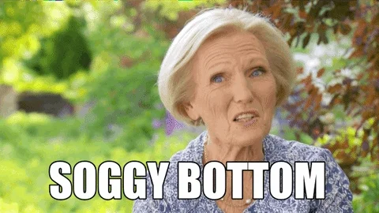

| Season | Episode | Moment |
|---|---|---|
| 5 | Desserts | #bincident: Iain tosses his showstopper into the garbage after Diana "accidentally" sabotages it. |
| 6 | Final | Nadiya gives a heartwarming victory speech that moves everyone to tears. |
| 4 | Desserts | #custardgate: "The most incredible case of baking espionage ever seen!" |
| 7 | Biscuits | Candice recreates her family's pub--including sticky floor--out of gingerbread. |
"On your marks...get set...BAKE!"
"The terror of a soggy bottom has been keeping me up all night."
"You can’t keep a tart waiting. Time is money, time is money."
